Cavaleiro
Sobrevivência
Maior Vida e Defesa do jogo; sacrifica mobilidade para cumprir o papel de linha de frente.
Escolha sua Classe. Domine os seis Elementos.
Monte a estratégia que vence cada batalha.
O que há de novo
Um novo Capítulo, um novo morador, prêmios todo dia e, pela primeira vez, música: Entherya agora tem trilha sonora própria.
 Novo capítulo
Novo capítulo
O Capítulo 4 leva os heróis ao coração da mata, onde o Ent Ancestral, o guardião mais antigo de Entherya, foi corrompido.
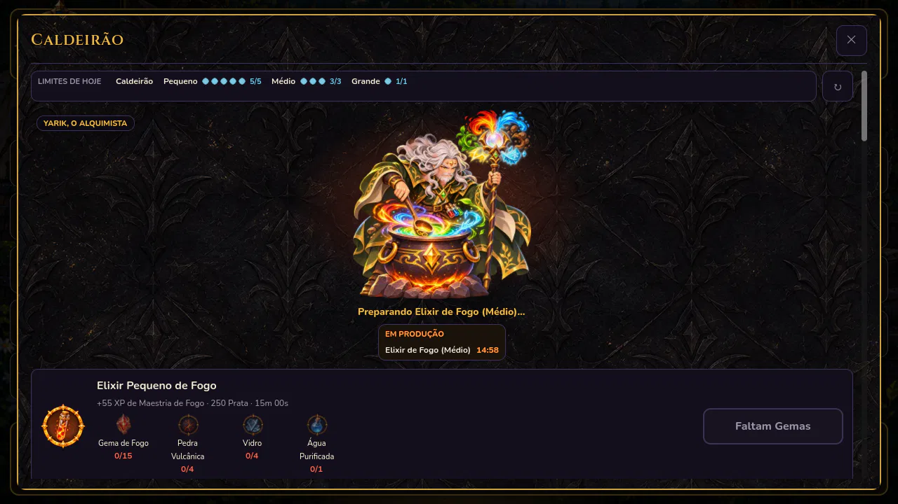
Novo personagemO Caldeirão ganhou casa própria e um mestre: o Yarik mexe, prova e solta a magia dos seis Elementos em cada Elixir.
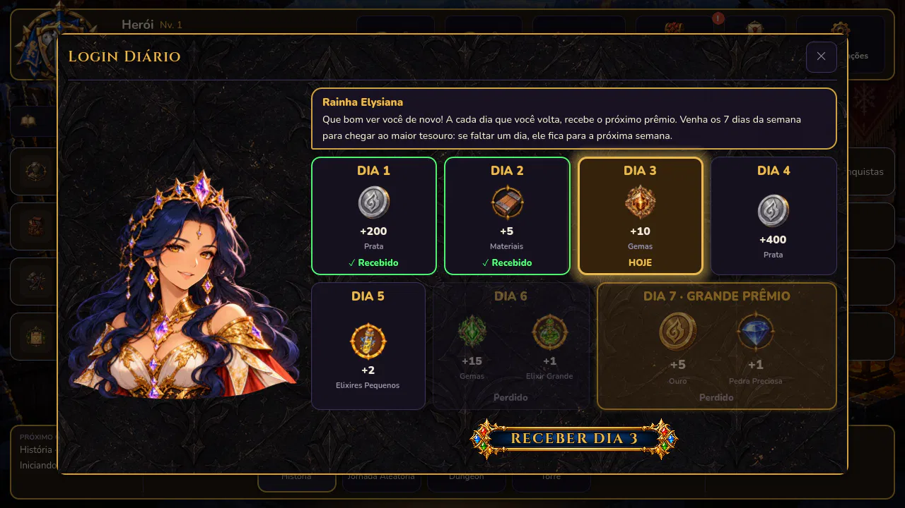
Todo diaA Rainha Elysiana recompensa quem volta: um prêmio por dia e o Grande Prêmio para quem vem os 7 dias da semana.
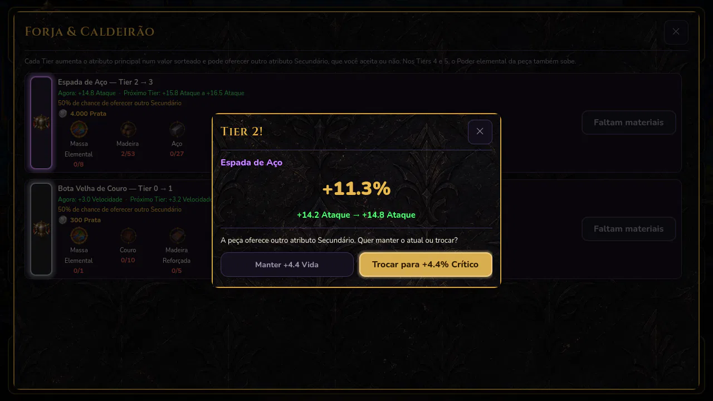
EquipamentosSuba o Tier das peças com Massa Elemental: cada nível sorteia mais força e pode oferecer um novo atributo.
Escolha seu herói
A Classe é escolhida uma vez e define quem você é em batalha. Cada uma tem seus pontos fortes e um ponto fraco que pede estratégia.
Sobrevivência
Maior Vida e Defesa do jogo; sacrifica mobilidade para cumprir o papel de linha de frente.
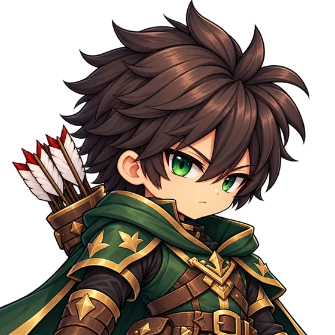

Iniciativa e precisão
Classe mais veloz do jogo, com a maior Precisão; baixa Defesa exige posicionamento e estratégia.
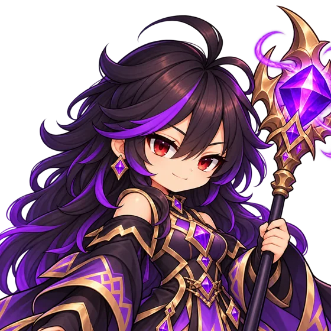

Dano bruto
Maior potencial ofensivo entre todas as Classes; Vida acima da média compensa a Defesa limitada.


Evasão
A Classe mais difícil de atingir, com velocidade e esquiva; baixo Ataque e Defesa a tornam vulnerável quando acertada.
A decisão de cada batalha
Antes de lutar, você escolhe o Elemento do herói. Cada um vence outro, e cada terreno favorece alguns deles. Olhar o inimigo e escolher bem é metade da vitória.

Com vantagemSuas Habilidades causam +50% de dano.

Com desvantagemSuas Habilidades causam −50% de dano.
Escolha o Elemento do herói e, dele, 2 Passivas e 3 Ativas, incluindo a Ultimate. Em batalha, o combate corre em tempo real e você decide a hora de cada habilidade. Lutar com um Elemento também aumenta a sua Maestria nele.
Os reinos de Entherya
Todo mapa favorece dois Elementos: quem luta com eles causa +10% de dano e tem +2% de chance de aplicar o efeito especial. Antes de entrar, o jogo mostra os dois Elementos do terreno e os do inimigo.

 Terra
Terra  Natureza
Natureza

Terra  Raio
Raio

Terra  Fogo
Fogo

 Água Fogo
Água Fogo

 Gelo Terra
Gelo Terra

Raio Fogo
Natureza Água
Para onde ir
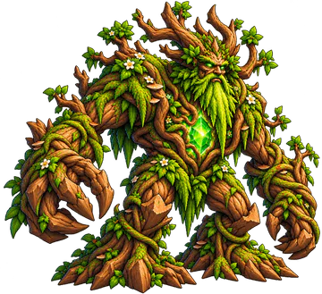
A energia sombria da Arca Primordial desce pelos rios até a Floresta Densa. A mata fica em silêncio, a água escurece e uma geada fora de época congela as folhas. No caminho estão o Javali de Espinhos, a Serpente da Cachoeira, o Cavaleiro do Inverno Eterno e a Aranha das Raízes, e no fundo da floresta espera o Ent Ancestral.
5 etapas de Natureza e Água, com uma surpresa de Gelo no meio. Chefes do Nível 16 ao 20.
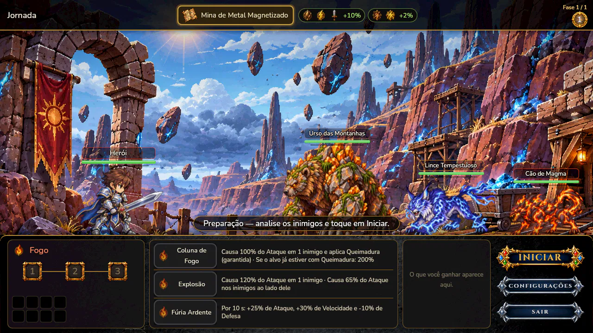
Os tremores vêm de uma mina abandonada, onde o metal magnetizado faz as pedras flutuarem. Raios, magma e uma tempestade magnética separam os heróis do Guardião do Núcleo Terrestre, corrompido pela energia da Arca Primordial.
5 etapas, muitas falas novas dos heróis e um desafio de verdade no fim.

Quatro Capítulos com cinco etapas cada, dos Arredores do Reino até o coração da Floresta Densa. Cada etapa é uma sequência de lutas que termina num Chefe, com falas de cada herói pelo caminho.
Prêmio especial na primeira vez que conclui cada etapa.

Uma jornada diferente a cada vez: o jogo sorteia o terreno e monstros que são fortes nele. São 5 lutas seguidas, cada uma mais difícil, e a última é contra um Chefe.
Ótima para juntar materiais e Gemas de Elementos variados.
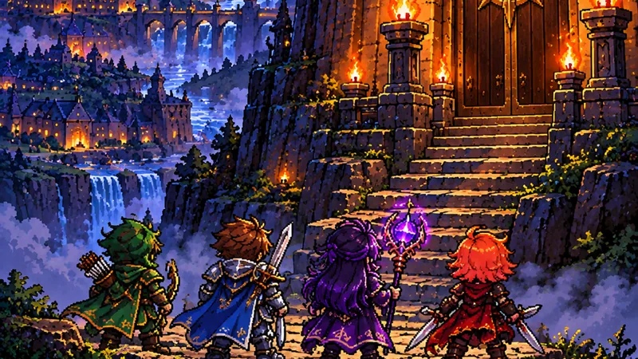
Suba andar por andar. Cada andar é uma única luta, difícil desde o começo. A cada 15 dias a Torre recomeça, com andares e prêmios novos.
Os andares mais altos dão os equipamentos mais raros.

Um tabuleiro de 60 casas. Jogue os dados todo dia e avance: há casas de buff, armadilhas, prêmios e dados extras, e a cada trecho um Chefe barra o caminho. O tabuleiro recomeça toda semana.
Os buffs que você junta valem até o fim do tabuleiro.
Grimório
São 61 criaturas, e cada uma tem sua própria história. No Grimório, os monstros que você ainda não enfrentou aparecem só como sombra, sem nome nem recompensa. Para preencher o Bestiário, só lutando.
Toque numa sombra abaixo para revelá-la.
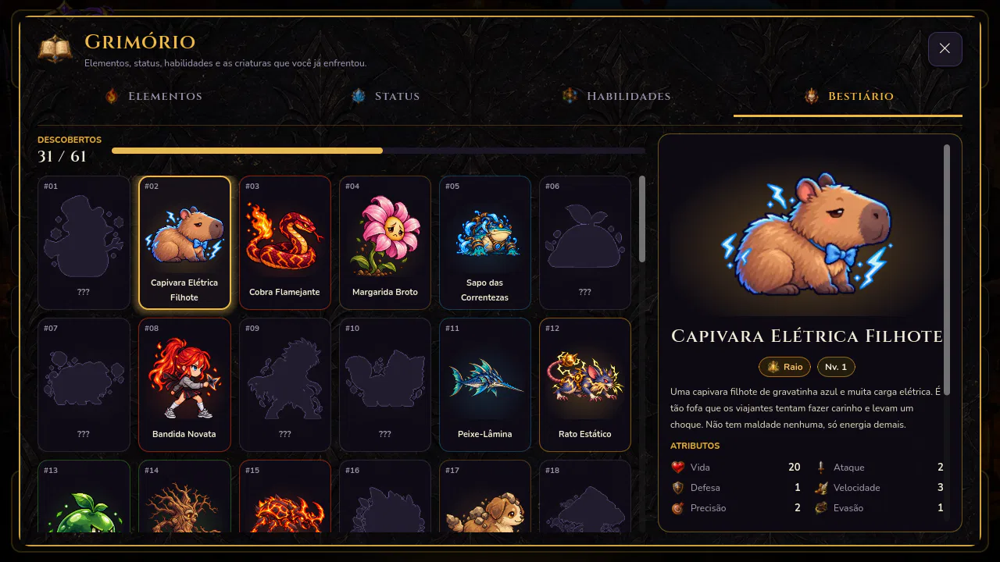


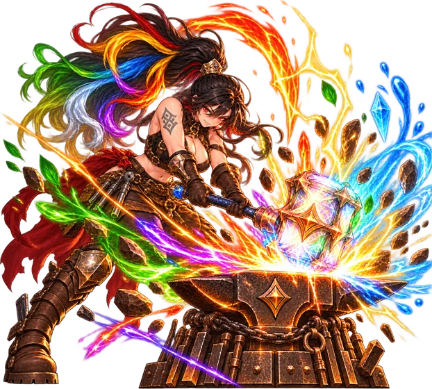
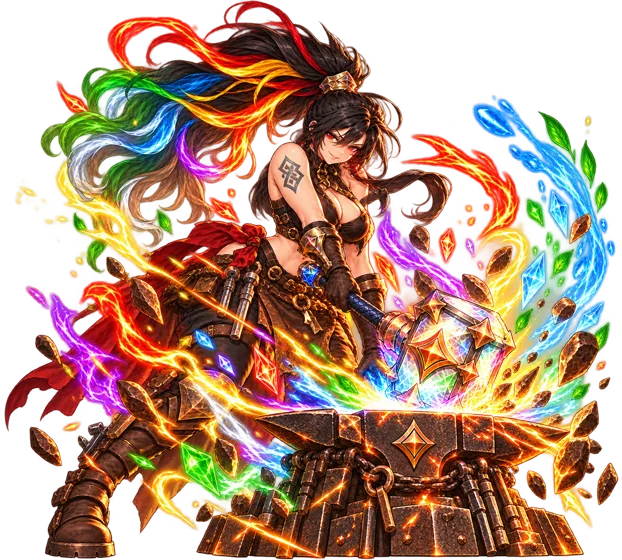
Yelena, a ferreira
Yarik, o Alquimista
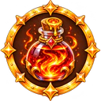
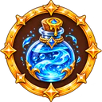
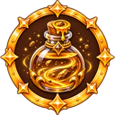
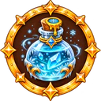
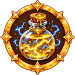
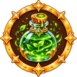
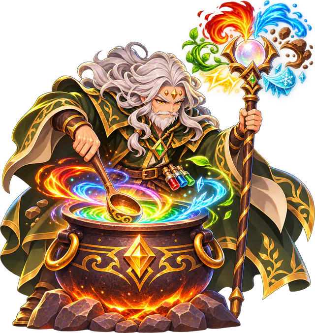
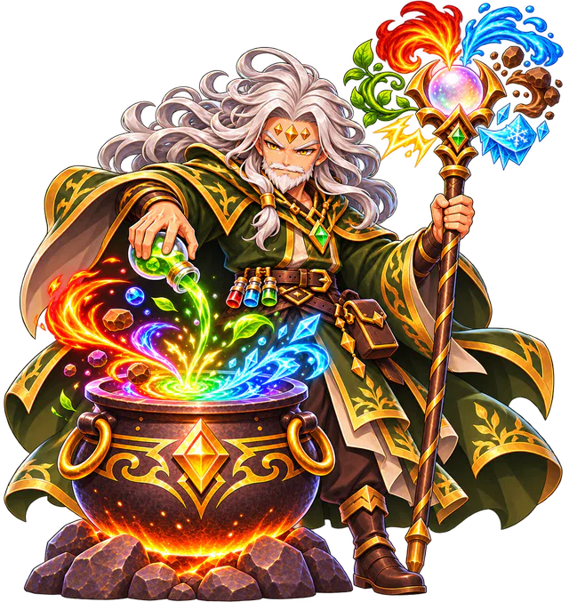
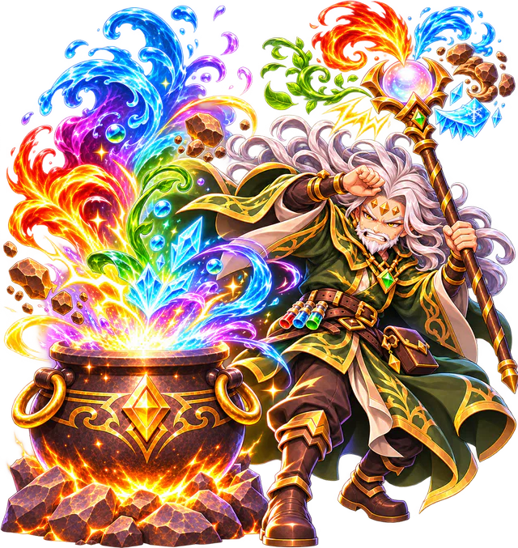
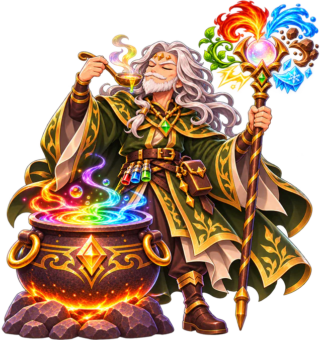
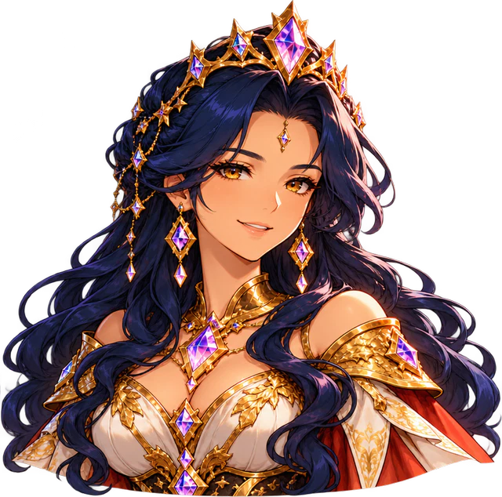
Rainha Elysiana
A cada dia que você entra no jogo, a Rainha Elysiana entrega o próximo prêmio da semana: Prata, materiais, Gemas, Elixires e, no 7º dia, o Grande Prêmio com Ouro e Pedra Preciosa. Faltou um dia? Você continua de onde parou.
Junto com as Missões Diárias e o Baú do dia, sempre tem um motivo para passar em Entherya.
Trilha sonora original
Cada lugar tem a sua música: a Base, a Forja, o Caldeirão, a Loja, o Grimório, as batalhas e os Chefes. Escute alguns temas:
Entre uma batalha e outra
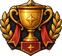
Missões novas todo dia e Conquistas para guardar de lembrança.
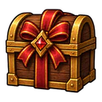
Um prêmio por dia de login e o Baú das missões diárias.
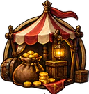
Venda e compre equipamentos de outros jogadores com Prata.
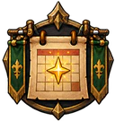
Seu herói continua juntando recompensas enquanto você está fora.
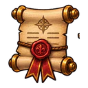
Dispute o maior Nível e a maior Maestria em cada Elemento.

Prêmios, avisos e as novidades de cada atualização chegam aqui.
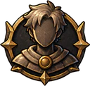
Entre com o Google e seu progresso fica salvo, em qualquer aparelho.

Jogue no idioma que preferir e troque quando quiser nas Configurações.

Guia do aventureiro
Barra ATB, Fila de Habilidades, Vantagem elemental, efeitos especiais, atributos e como evoluir: o guia completo explica tudo em poucos minutos.
Abrir o guiaGameplay
A Maga escolhe o Modo História, o Elemento e as habilidades, e enfrenta a primeira jornada até o Chefe.
Fique por dentro
Novidades, ilustrações dos Chefes, bastidores do desenvolvimento e os convites para testar o jogo antes do lançamento saem primeiro no Instagram.
Seguir @elementalknights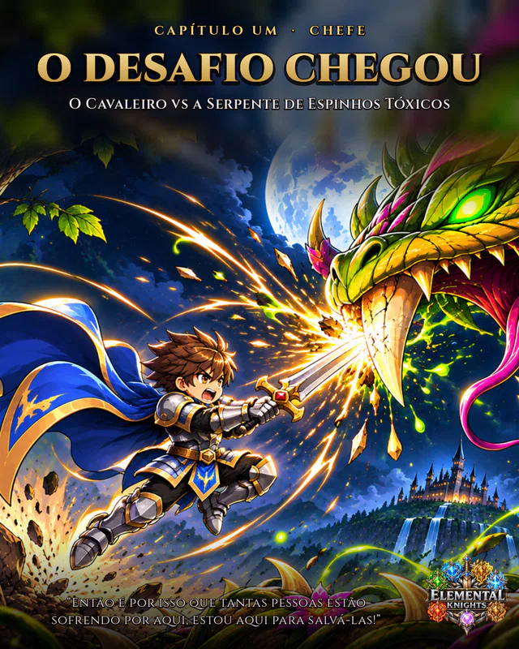
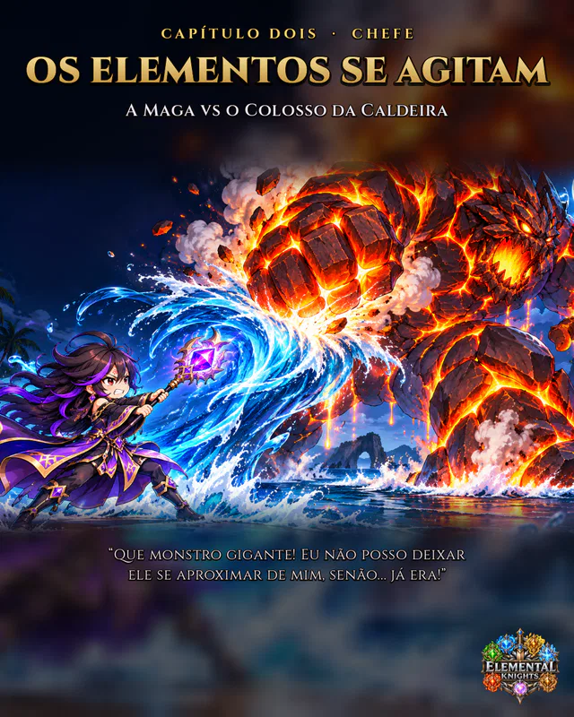
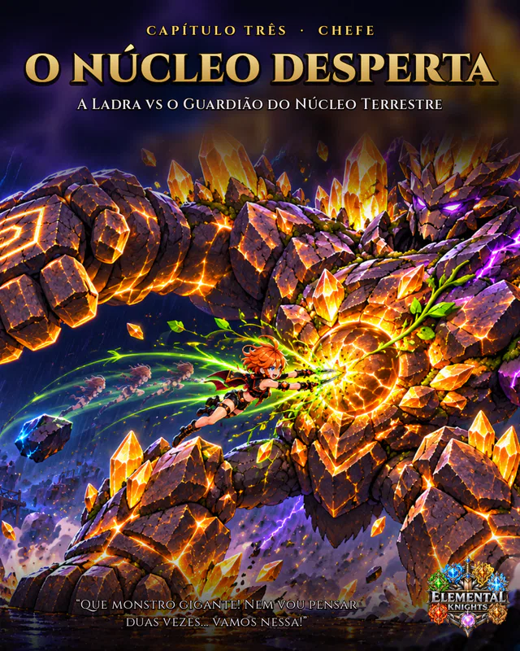
Perguntas frequentes
Elemental Knights é um RPG de estratégia para celular (Android), com batalhas em tempo real e visual em pixel art. Você escolhe uma Classe, domina os seis Elementos e monta uma estratégia de habilidades para vencer monstros e Chefes nos reinos de Entherya.
Sim. O jogo é gratuito para jogar.
Elemental Knights é para Android. O lançamento na Google Play está a caminho; siga @elementalknights no Instagram para saber a data e participar dos testes.
São quatro: Cavaleiro (sobrevivência, maior Vida e Defesa), Arqueiro (iniciativa e precisão), Maga (dano bruto) e Ladra (evasão e velocidade). A Classe é escolhida uma vez e é permanente.
Há seis Elementos — Fogo, Gelo, Natureza, Terra, Raio e Água — e cada um vence o seguinte da roda. Com vantagem, as habilidades causam +50% de dano; com desvantagem, −50%. Cada Elemento tem um efeito especial: Queimadura, Congelamento, Envenenamento, Abalo, Paralisia e Lentidão.
Modo História (quatro Capítulos com Chefes), Jornada Aleatória, Torre (andares cada vez mais difíceis, que recomeçam a cada 15 dias) e Dungeon (um tabuleiro de dados com 60 casas que recomeça toda semana).
Sim, Elemental Knights está em português e em inglês, e você troca o idioma nas Configurações.
Siga @elementalknights no Instagram. Lá saem as novidades, as atualizações e os convites para testar o jogo antes do lançamento.
Disponível em português e inglês. Siga @elementalknights no Instagram para acompanhar as novidades e participar dos testes.
Dúvidas, sugestões ou problemas na conta: irontyro.games@gmail.com